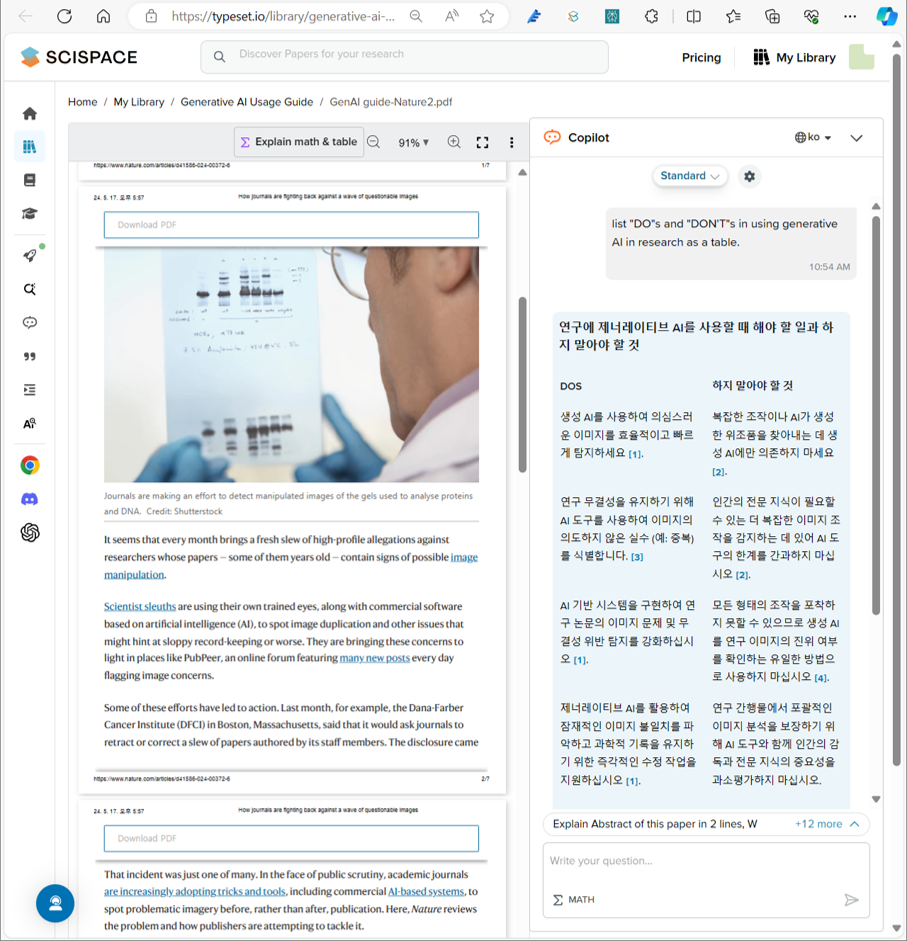

- ChatGPT가 등장한 직후부터 연구, 교육계가 들썩였습니다.
- 당장의 괴로운 글쓰기를 해결할 수 있기 때문에 많은 관계자들의 관심을 끌었습니다.
- 그만큼 뜨거웠던 찬반에 대한 논의 결과 정리되고 있는 내용을 요약합니다.
1. 결과

- 국내외 여러 기관에서 관련 가이드를 제시했습니다.
- 본 자료에서는 해외 기관 중심으로 8곳의 자료를 담았습니다만,
- 그간 언론이나 보도자료 등을 통해 보았던 다른 곳의 가이드도 대부분 대동소이합니다.
- 따라서 중요한 내용은 모두 담겼다고 볼 수 있습니다.
- 이미지 파일에 빠진 링크는 PDF 파일에서 확인하실 수 있습니다.
2. 가이드 제작 방법
- 많은 곳에서 나온 가이드를 모두 찾아 읽으려면 시간이 많이 갑니다.
- 읽은 내용을 정리하는데도 시간과 노력이 많이 듭니다.
- 생성 AI 도구의 힘을 빌려 이를 편하게 처리했습니다.
- 그 과정을 공유드립니다.
2.1. 정보 수집 : perplexity
- 이 작업을 한다고 했을 때 가장 먼저 할 일은 웹 검색입니다.
- 구글 등 검색 엔진에 여러 키워드를 바꿔넣으며 자료를 검색하고 내려받을 것입니다.
- 수집한 내용을 정리할 것입니다.
- 이 과정을 자동화해주는 멋진 도구가 perplexity.ai입니다.
- guide for using generative AI in academic purpose라는 프롬프트를 넣습니다.
- 위 스크린샷의 Searching the web을 보면 입력 프롬프트가 다양하게 변화되어 있습니다.
- 그리고 20개의 소스로부터 관련 내용을 찾아 Answer부분에 내용을 정리합니다.
- Reference를 클릭해 이 모든 내용을 가져오기보다 대표적인 것 몇 개를 가져옵니다.
- 그리고 ACS (미국화학회)에서 선제적으로 2023년 2월에 발표된 자료를 가져오고,
- 최근 이미지 관련하여 Nature에서 강조한 자료들을 가져옵니다.
- 평소의 정보 수집 활동을 통해 알고 있고 중요하게 생각하는 자료입니다.
2.2. 내용 정리
2.2.1. 요약 : MS Edge Copilot, scispace
- 각각의 내용들이 perplexity 출력물에 요약이 되어 있지만, 조금 더 체계적으로 정리를 해보기로 합니다.
- PDF로 다운받을 수 있는 것들은 다운을 받고,
- 그렇지 않은 웹 문서는 MS Edge Copilot에서 정리합니다.
- 내용 정리를 용이하게 하기 위해 해야 할 것(Do)과 하지 말아야 할 것(Don’t)으로 구분하여 표로 정리하라는 지시를 내립니다.
- 이 때 웹 검색이 아닌 해당 문서를 사용하도록 설정해야 합니다.
- PDF 문서는 scispace에 올립니다.
- PDF 뷰어를 겸한 copilot 모드에서 동일한 질문을 합니다.
- 출력 언어 설정을 ko(한국어)로 하면 프롬프트에 언어 설정을 할 필요가 없습니다.

2.2.2. 정리 : MS Word
- MS Edge Copilot은 표로 출력한 결과를 Excel 파일로 내놓습니다.
- scispace에는 그런 기능이 없지만 긁어서 붙이기 어렵지 않습니다.
- 이렇게 정리된 표를 취합하는 과정은 수작업으로 수행합니다.
- 방법이 없어서 수작업으로 하는 것이 아닙니다.
- 요약된 내용을 한번씩 읽어보며 의문이 나면 원문을 읽어보기 위한 과정입니다.
- 거의 모든 과정이 자동으로 처리되기 때문에, 자칫하면 원문을 한 번도 읽지 않은 채 결과물이 나옵니다.
- 편함만 찾다가 문제 발생시 매우 위험한 상황을 만날 수 있습니다.
- 한 줄씩 옮기면서 이게 무슨 소리일까생각하고,
- 납득이 되지 않으면 원문을 찾아 읽으며 필요시 표현을 수정합니다.
- 오류는 대개 기계번역 과정에서 어색한 단어가 쓰여 오해를 빚는 경우들입니다.
2.2.3. 취합 : ChatGPT
- 정리를 하고 보니 여러 기관에서 비슷한 말들을 했습니다.
- 사실 서로 많이 다르면 이상한 상황입니다.
- 내용을 기준으로 묶고 중복된 내용은 관련 레퍼런스를 여럿 달면 좋겠습니다.
- ChatGPT에 파일을 올리고 관련 지시를 내립니다.
- 결과물이 한 번에 마음에 들지 않습니다.
- 충분히 원하는 결과물이 나올 때까지 프롬프트를 수정하며 지시를 반복합니다.
- 충분히 정리된 결과를 얻었습니다.
- 디자인은 아직 많이 거칠지만, 어차피 손은 제가 봐야 하니 여기서부터 수작업으로 넘어갑니다.
2.2.4. 정돈 : MS PowerPoint
- 익숙한 파워포인트에서 작업을 합니다.
- 직장 로고와 제 연락처도 박아 넣고, 레퍼런스들에 링크도 겁니다.
- 중요한 메시지는 강조도 합니다.
- 자동화보다 수작업이 더 효율적인 영역입니다.
- Do와 Don’t 열의 내용이 겹쳐 Don’t를 삭제했습니다.
- 순서도 내용에 맞추어 묶어 엮었습니다.
2.2.5. 번역 : DeepL
- DeepL에 powerpoint 문서를 입력하면 포맷을 유지하고 영어로 번역합니다.
- 출력 언어를 영어로 설정 후 파일을 업로드합니다.
- 결과 파일을 다운로드 후, 암호를 해제합니다.
- 파일을 열어 행 길이가 변하면서 발생한 줄 넘김 등을 처리하여 최종 문서를 만듭니다.
3. 결론
- 아직 많은 분들이 ChatGPT만 알고 계십니다.
- 그러나 상황에 따라 사용하기 좋은 AI 도구들이 많이 나왔고, 발달하고 있습니다.
- 윤리적 가이드라인을 지키며 올바른 방향으로 사용하시기를 바랍니다.